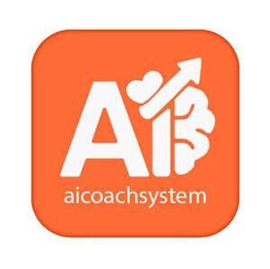

Trade Mark Journal No.2025/031 1 August 2025
UK00004231638 10 July 2025 (9,35,41,42)

International priority date claimed: 9 July 2025
(European Union Intellectual Property Office (EUIPO))
(019215043)
- Class 9
- SCIENTIFIC AND TECHNOLOGICAL APPARATUS; Mobile application software for coaching and training; downloadable software for personal development coaching; mobile application software for business coaching; downloadable coaching assessment software; mobile application software for performance management; downloadable AI coaching software; mobile application software for survey and feedback collection; downloadable training and education software; mobile application software for goal tracking and habit formation; downloadable wellness and mindfulness software; mobile application software for team coaching and collaboration; downloadable business analytics software; mobile application software for leadership development; downloadable certification and accreditation software; mobile application software for mentor-mentee matching; downloadable performance evaluation software; mobile application software for scheduling and calendar management; downloadable communication and messaging software for coaching; mobile application software for progress tracking and reporting; downloadable artificial intelligence software for coaching applications; mobile application software for assessment and evaluation; downloadable software for competency evaluation; mobile application software for skills assessment; downloadable training management software; mobile application software for learning and development; downloadable coaching platform software; mobile application software for professional development; downloadable mentoring software; mobile application software for career coaching; downloadable life coaching software; mobile application software for executive coaching; downloadable leadership training software; mobile application software for team building; downloadable organizational development software; mobile application software for human resources management; downloadable talent management software; mobile application software for employee engagement; downloadable workforce analytics software; mobile application software for performance measurement; downloadable business intelligence software; mobile application software for data visualization; downloadable reporting software; mobile application software for dashboard creation; downloadable analytics software; mobile application software for survey creation; downloadable feedback management software; mobile application software for 360-degree feedback; downloadable assessment tools; mobile application software for psychometric testing; downloadable competency mapping software; mobile application software for succession planning; downloadable coaching certification software; mobile application software for trainer certification; downloadable accreditation management software; mobile application software for continuing education; downloadable professional development tracking software; mobile application software for learning management; downloadable course management software; mobile application software for virtual training; downloadable e-learning software; mobile application software for microlearning; downloadable gamification software for training; mobile application software for social learning; downloadable collaborative learning software; mobile application software for peer coaching; downloadable group coaching software; mobile application software for coaching circles; downloadable mastermind software; mobile application software for accountability tracking; downloadable habit tracking software; mobile application software for goal setting; downloadable objective tracking software; mobile application software for key performance indicators; downloadable milestone tracking software; mobile application software for progress monitoring; downloadable achievement tracking software; mobile application software for reward systems; downloadable recognition software; mobile application software for motivation tracking; downloadable engagement measurement software.
- Class 35
- BUSINESS MANAGEMENT AND ADMINISTRATION; Business management consulting; business development consulting; leadership development consulting; personnel management consulting; business organization consulting; business strategy consulting; business performance consulting; business transformation consulting; human resources consulting; organizational development consulting; team building consulting; business process consulting; business advisory services; business performance evaluation; personnel assessment; business efficiency analysis; organizational assessment; employee performance evaluation; management assessment; business analytics consulting; performance measurement consulting; business intelligence consulting; workforce analytics; talent assessment; competency evaluation; leadership assessment; organizational culture assessment; business process evaluation; productivity assessment; business partnership facilitation; professional networking; business collaboration consulting; strategic alliance consulting; vendor management; supplier relationship management; business relationship management; professional services coordination; business integration consulting; partnership development; collaborative business planning; business ecosystem development; professional services marketplace facilitation; business research; market research; organizational research; employee satisfaction surveys; business intelligence research; performance research; leadership effectiveness research; organizational climate surveys; business analytics; data analysis for business purposes; business trend analysis; competitive intelligence; business benchmarking; business process optimization; management consulting; strategic planning consulting; change management consulting; operational consulting; business efficiency consulting; performance improvement consulting; business development services; corporate strategy consulting; organizational consulting; business planning services; management advisory services; business optimization consulting; corporate development consulting; business analysis services; organizational effectiveness consulting; business transformation services; leadership consulting; executive advisory services; business intelligence services; data processing; statistical analysis; business analytics consulting.
- Class 41
- EDUCATION AND TRAINING; Coaching services in personal development; coaching services in business development; life coaching; business coaching; executive coaching; leadership coaching; team coaching; career coaching; performance coaching; professional coaching; personal coaching; group coaching; individual coaching; corporate coaching; training services via online platforms; educational services via web-based platforms; online training courses; training workshops; seminars and conferences; online educational courses and training programs; mentoring in business and personal development; coaching certification programs; coach training; professional development training; leadership development programs; management training programs; skills development training; competency-based training programs; personal development coaching; personal growth training; self-improvement training; mindfulness training; wellness coaching; stress management training; emotional intelligence training; communication skills training; interpersonal skills development; confidence building training; goal setting coaching; habit formation coaching; behavioral change coaching; motivation coaching; resilience training; educational assessment; skills assessment; competency evaluation; learning assessment; training effectiveness evaluation; educational testing; performance evaluation in education and training; coaching effectiveness assessment; learning progress evaluation; educational benchmarking; training needs assessment; learning analytics; online education; e-learning; digital training platforms; virtual coaching; remote training; online mentoring; web-based educational services; digital learning content provision; online course development; virtual workshop facilitation; digital coaching platform services; online certification programs; remote assessment; virtual training delivery; professional certification; continuing education; professional development programs; certification training programs; accreditation in coaching; professional skills training; career development; professional coaching certification; leadership certification programs; training program accreditation; professional competency certification; educational consulting; training consulting; learning and development consulting; instructional design; curriculum development; educational program development; training program development; learning solutions; educational technology consulting; e-learning development; online learning solutions; digital education solutions; virtual learning solutions; educational content development; training content development; learning content development; educational materials development; training materials development; learning materials development; educational platform development; training platform development; learning platform development; business coaching; executive coaching; corporate coaching; business mentoring; corporate coaching services; business coaching services; professional coaching; management coaching; leadership coaching; team coaching; performance coaching; business mentoring services; executive mentoring; leadership mentoring; professional mentoring; business training consulting; management training consulting; leadership training consulting; organizational training consulting; business skills training; management skills training; leadership skills training; professional skills training; business education consulting; management education consulting; leadership education consulting; organizational education consulting.
- Class 42
- SCIENTIFIC AND TECHNOLOGICAL SERVICES; Software as a service (SaaS) featuring software for coaching and training; software as a service (SaaS) featuring artificial intelligence software for coaching; software as a service (SaaS) featuring software for performance management; software as a service (SaaS) featuring software for assessment and evaluation; software as a service (SaaS) featuring software for business management; software as a service (SaaS) featuring software for educational purposes; software as a service (SaaS) featuring software for personal development; software as a service (SaaS) featuring collaboration software; platform as a service (PaaS) featuring computer software platforms for coaching; platform as a service (PaaS) featuring artificial intelligence platforms for coaching and training; platform as a service (PaaS) featuring software platforms for performance management; platform as a service (PaaS) featuring platforms for assessment and evaluation; platform as a service (PaaS) featuring business management platforms; platform as a service (PaaS) featuring educational platforms; platform as a service (PaaS) featuring collaboration platforms; artificial intelligence consulting; machine learning consulting; development of artificial intelligence software; design and development of machine learning algorithms; artificial intelligence software development; machine learning software development; AI-powered coaching software development; intelligent software development; automated coaching system development; AI-based assessment software development; machine learning model development for coaching applications; design and development of computer software for coaching applications; software development in coaching and training; custom software development; application software development; mobile application development; web application development; software design; software architecture consulting; software integration; software customization; software maintenance and support; cloud computing services featuring software for coaching and training; hosting of digital content; providing temporary use of online non-downloadable software for coaching; cloud-based software services; web hosting; application hosting; data hosting; cloud storage; cloud-based collaboration services; remote server administration; cloud infrastructure services; data analytics; business intelligence services; data processing; data analysis; performance analytics; Providing online non-downloadable software for data reporting and visualization; dashboard development; data visualization; analytics software development; business analytics consulting; data mining; statistical analysis; predictive analytics; data interpretation; development of assessment software; survey software development; evaluation software development; testing software development; psychometric assessment software development; competency assessment software development; performance measurement software development; feedback system development; rating system development; scoring system development; assessment platform development; software integration services; application programming interface (API) development; system integration; third-party software integration; platform integration; data integration; workflow integration; business system integration; enterprise software integration; application programming interface (API) management; microservices development; web services development.
Sami Mertgun Bugay
Representative: Metida Ltd